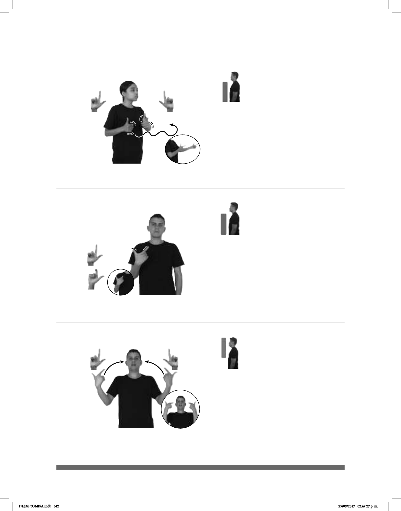

342
Seña: SS
L.1
Palmas hacia el centro.
A la altura del pecho del
lado derecho al izquierdo.
Los brazos se mueven
formando un arco mientras las manos
se agitan.
Labios soplando.
1. sust. f. Arma de
fuego que carga y dispara sus proyecti-
les automáticamente y a gran velocidad.
2. sust. f. Especie de ametralladora
portátil, que dispara ráfagas de balas en
sucesión rápida.
Seña: SM
Seña que pasa de
L.1 a L.10
Palma hacia adentro.
A la altura del pecho.
El dedo índice se
retrae.
La mano
simula la forma del arma de fuego y
el movimiento del dedo simula la
acción de jalar el gatillo.
sust. f. Arma de fuego
de cañón corto que se sujeta con una
sola mano.
Seña: SS
L.1
Palmas hacia adentro.
A la altura de los ojos.
Las manos se
mueven formando un arco hacia
adentro.
: Cabeza
hacia atrás, cejas hacia arriba, boca
abierta y mostrando los dientes.
sust. m. Ataque
sorpresivo y violento que hace
alguien a un lugar o a una persona
(L-4)
1
2
(A)
(L-5)
(L-6)
___________________________________________neg_
AMETRALLADORA DIFERENTE pro-YO NO-GUSTAR
A mí no me gustan las ametralladoras.
SOLDADO ARMA pro-ÉL TENER
El soldado tiene un arma.
LUGAR TEPITO MUCHOS ASALTOS HABER
allá
En Tepito hay muchos asaltos.
DLSM COMISA.indb 342 25/09/2017 02:47:27 p. m.